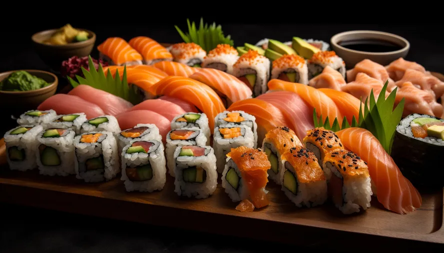

A gastronomia no Japão é rica, diversificada e profundamente enraizada em tradições culturais e ingredientes locais. Alguns dos aspectos mais marcantes da culinária japonesa incluem a ênfase na frescura dos ingredientes, a apresentação cuidadosa dos pratos e o equilíbrio entre sabor e saúde.
